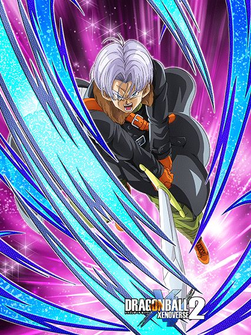

DATA DE LANÇAMENTO: 23/04/2026
Um Card com restrições e coisas estranhas.
O Trunks tem 30% de redução de dano e ganha 50% de chance de desvio e crítico se tiverem mais aliados "Vegeta's Family" ou "Crossover"
Apesar de "Crossover" ser quase um time morto, essa parte da Passiva dele é até aceitável
O grande problema é que ele ganha buffs diferentes dependendo do slot em que estiver, e da cor de orb que ele pegar
Se ele pegar orbs no slot 2, ele vai ter mais desvio ou Defesa Ativa, e no slot 3, mais dano ou suporte
Esse tipo de mecânica torna o Card bem inconsistente e bem frustrante de usar, já que planejar os orbs em todo turno que ele estiver não é fácil
E o pior é que ele nem é tão bom assim pra valer o esforço 💀
Nota dos Links:
06/10
Nota das Categorias:
09/10
Você chegou ao fim dessa página!
Obrigado por ler tudo, e fica a vontade pra ver outras